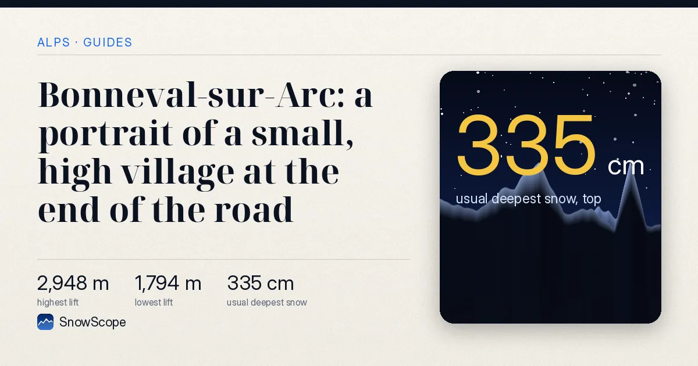

Bonneval-sur-Arc: a portrait of a small, high village at the end of the road
Bonneval-sur-Arc is ringed by the high Alps and cut off by winter. The Col de l'Iseran, the highest paved pass in the Alps at 2,764 m, closes to cars from November to June, leaving a small village of about 285 people with its own quiet ski area. That isolation is the point: very high altitude, steady snow, and few crowds.
See the live snow forecast for Bonneval-sur-Arc in the SnowScope appSnow depth, powder alerts and the 3D map, free.

A village in the mountains
Bonneval sits in the Haute-Maurienne, on the Italian border and partly inside the Vanoise National Park. The village is listed as one of the Most Beautiful Villages of France, with its traditional stone roofs and narrow lanes. The land around it climbs from 1,759 m to 3,642 m, which tells you at once that winters here are cold and long.
In winter the Arc valley dead-ends at Bonneval. You reach it only from the Maurienne side. This remoteness is real: before you travel, check road conditions in the valley and confirm that lifts are running on the official website.

Small area, big height
The ski area is modest in size: about 10 lifts and 20 km of runs, climbing from 1,794 m to 2,948 m. That is not large by Savoie standards, but height is everything here. The vertical is 1,154 m, and you can learn the whole area in a morning. For families with young children and beginners who want quiet slopes, that is an advantage.
Strong skiers who want more than the marked runs must go with a guide. Off-piste skiing requires the Météo-France avalanche bulletin every morning. Read it before leaving the pistes.
Snow depth by season
Height gives Bonneval more snow than its size suggests. At the base, 1,794 m, the usual peak depth across 46 past winters is about 99 cm, comparable to what many larger resorts see only at mid-mountain. That is enough for skiing, but it is thin early in the season and can expose rocks.
At mid-mountain, 2,371 m, the pattern is clearer. Typical snow depths are 26 cm in November, 66 cm in December, 103 cm in January, 128 cm in February and 134 cm in March. The usual peak here is about 172 cm. At that height there are at least 50 cm of snow on the ground for 15 weeks in nine winters out of ten.
Upper slopes stay deep into spring
Near the top, 2,948 m, the season is much longer and snow is deeper. The usual peak is about 335 cm, more than three times the base. Here the deepest month is April, with about 272 cm typical. The first snow reaches this height around 30 September, and the last patches melt around 19 June.
This height difference is why Bonneval stays open late in the spring. Even in May, the top usually has about 214 cm. The upper slopes are where the season stretches longest.
When to come
For the most reliable snow at the bottom of the area, February is the best month. The best week of the season at 1,794 m has at least 50 cm in 85 percent of winters. Snow there peaks in February and March. In November, the base can be thin; expect about 10 cm typical. Wait until December at the earliest if you want good conditions at the bottom.
Higher up, the season is long and reliable. The first snow reaches 2,371 m around 7 October. By mid-November, 26 cm is typical there. From December onwards, 50 cm or more is usual for 15 weeks in nine winters out of ten.
Trends over time
Snow here has been stable. At the base, 1,794 m, the median peak was about 100 cm in the first fifteen winters on record and about 101 cm in the most recent fifteen. At mid-mountain, 2,371 m, the peak fell slightly from about 176 cm to about 169 cm, but the total days with snow on the ground dropped more sharply, from about 256 to 225. Last winter, 2025-26, was close to normal with a peak of about 167 cm at that height.
Tips for skiers
- Reach Bonneval from the Maurienne valley only; the Iseran road is closed in winter. Check valley road conditions before you travel.
- For families and beginners, February and March offer the most reliable snow at the base and mid-mountain.
- Thin snow in November means rocks may be visible at the bottom of the area. Wait until December if you want cover.
- Off-piste skiers must go with a guide and read the Météo-France avalanche bulletin every morning.
- Before you go, check the official website to confirm which lifts are open.
About these numbers
Resort snow depths are the deepest snow on the resort's upper slopes on the date shown; they are estimates for an area, not a measurement at one point. Forecasts can change. Always read the official avalanche bulletin before going off-piste.
Official avalanche bulletins: Météo-France BERA
Cite this report
For research, teaching or the press: the numbers and charts are free to reuse under CC BY 4.0 with this citation.
SnowScope (2026), Bonneval-sur-Arc: a portrait of a small, high village at the end of the road, https://snowscope.app/blog/en/2026/11/bonneval-sur-arc-portrait-small-high-village-snow.html, accessed 2026-11-09
SnowScope (Atlas Labs). (2026, November 9). Bonneval-sur-Arc: a portrait of a small, high village at the end of the road. SnowScope snow reports. https://snowscope.app/blog/en/2026/11/bonneval-sur-arc-portrait-small-high-village-snow.html
BibTeX
@misc{snowscope2026bonnevalsurarcportraitsm,
author = {{SnowScope (Atlas Labs)}},
title = {Bonneval-sur-Arc: a portrait of a small, high village at the end of the road},
year = {2026},
month = nov,
howpublished = {\url{https://snowscope.app/blog/en/2026/11/bonneval-sur-arc-portrait-small-high-village-snow.html}},
note = {Published 2026-11-09 11:38 UTC; accessed 2026-11-09}
}· CC BY 4.0 · Methods, data and tools →
Bonneval-sur-Arc: snow and temperature by height, this winter vs last (tools) →
Follow Bonneval-sur-Arc
Free: a message when fresh snow is coming, and the forecast every morning.
More snow reports

Snow on 3 November 2026: Kendall Mountain 53 in (134 cm) after a storm, Big White 91 cm, the Alps up to 55 cm at Bonneval-sur-Arc.

Terenten has 73 cm on upper slopes as of 4 November; freezing level will reach 2970 m on 5 November, bringing rain to the summit at 1381 m.